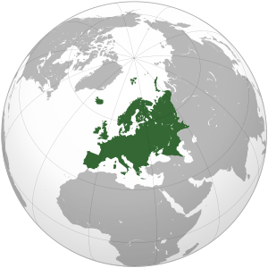
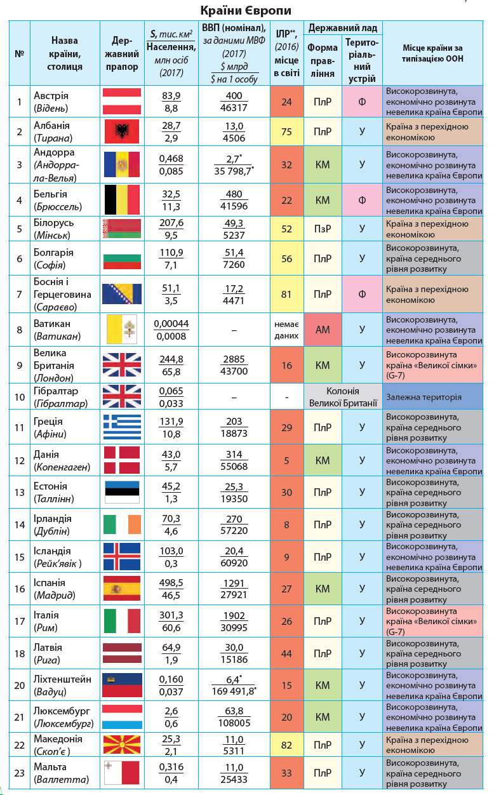

Європа названа за ім'ям героїні давньогрецької міфології Європи, фінікійської царівни, яку викрав Зевс і відвіз на Крит. Походження цього імені, як вважає французький лінгвіст П. Шантрен, невідоме.
Європа з Азією складають континент Євразію, займає 8 % поверхні суходолу; площа Європи 10 532 000 км². Європа повністю лежить у північній півкулі між 36° пн. ш. і Північним Льодовитим океаном. Майже 2/3 території займає рівнина: від європейської частини Росії на сході (Східноєвропейська рівнина) до низинних територій на заході на узбережжі Біскайської затоки.
У різні часи східну межу Європи проводили по-різному, простежується загальна тенденція «розростання Європи на схід». Останні три століття умовну межу між Європою і Азією на суходолі проводять вздовж східного підніжжя Уралу, по річці Ембі, Каспійському морю, Кумо-Маницькій западині (часто до Європи зараховують Кавказ), Чорному морю, протоці Босфор, Мармуровому морю, протоці Дарданелли, Егейському морю; Середземне море і Гібралтарська протока відокремлюють Європу від Африки.
Майже уся Європа лежить у помірному кліматичному поясі; у південній частині Європи субтропічний клімат (середземноморський), на півночі — субполярний. Середньорічна кількість опадів — 500—800 мм, у горах (особливо на західних схилах) — понад 2000 мм (над Которською затокою 4650 мм).
Найбільше озер у північній частині Європи; найглибші — біля підніжжя Альп (Комо, Ґарда, Женевське, Боденське). Озера площею понад 5100 км² розташовані у Східній Європі: Ладозьке, Онезьке, Чудське. Найбільші річки (довжиною понад 800 км): Волга, Дунай, Дніпро, Урал, Дон, Печора, Дністер, Рейн, Луара, Ельба, Вісла, Одер, Прут, Рона.
Основні родовища корисних копалин: нафти і природного газу — в Північному морі, Баку, вугілля — Рурський, Верхньосілезький, Донецький, Печорський, Підмосковний басейни, залізних руд — Курська магнітна аномалія, Лотаринґія, північ Скандинавії, марганцевих руд — Нікопольське родовище; є також родовища кольорових металів, бокситів, кам'яної солі, соди.